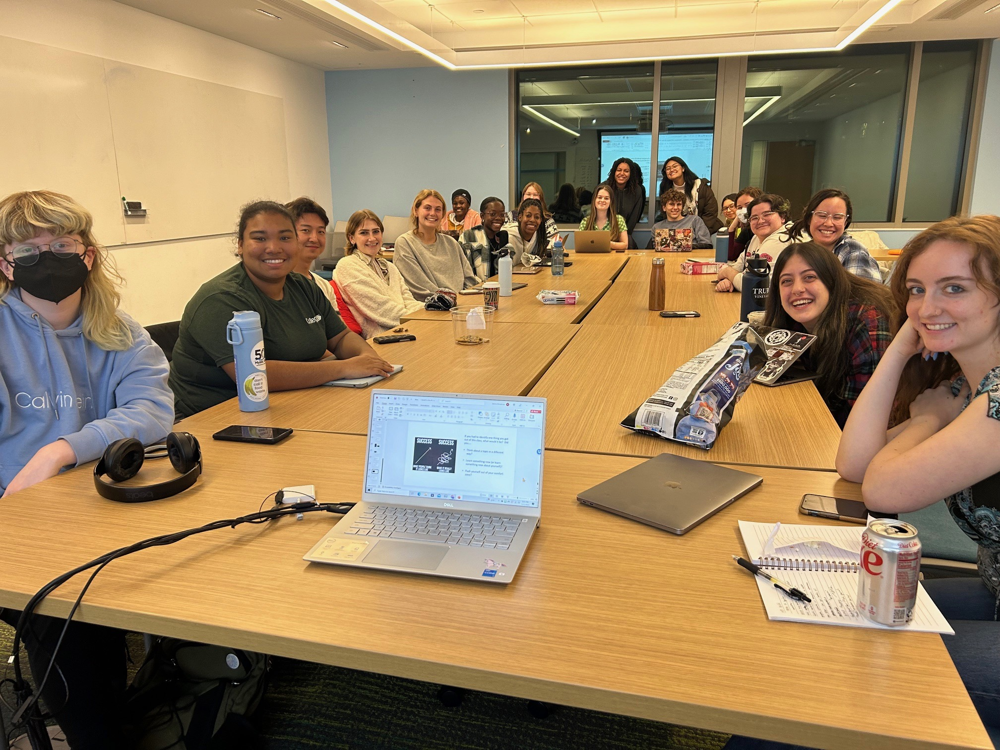

Let's Talk About Sex
The Classroom and Beyond
How do Americans learn about sex, and from whom? What does a modern school sex
education curriculum include....and leave out? What messages about sex and sexuality do we
absorb from informal sources like social media, pornography, and advertising? How do political,
religious, social, and regional pressures affect what we learn? What might sex education look
like in the future?
This Experimental College course in Tufts University taught by
Jeanna L. Kinnebrew, Ph.D. (she/her/hers) explores the fascinating and contentious history
of American sex education since 1922. Students investigated the major themes, debates, and
issues in both formal and informal sex education. In addition to secondary source excerpts,
we used a variety of primary sources - such as 1960s teen films, religious and secular
sex education curricula, social media, and reality TV shows - to understand how and why sex
education has changed over the last century.
At the heart of our scholarly endeavor is the desire to think deeply and
creatively about the ways Americans have made sense of sex and sexuality. In this vein, for the
final project, each student became an educator themselves. Each person had the opportunity to use their
knowledge and original research to create either a written essay or a multimedia piece (TikTok
video; a TEDTalk; a digital poster; a work of art; etc.) designed to educate their community on
one aspect of sex or sexuality history.

Class Fall 2023
 Home
Projects
Slides
Readings
Home
Projects
Slides
Readings